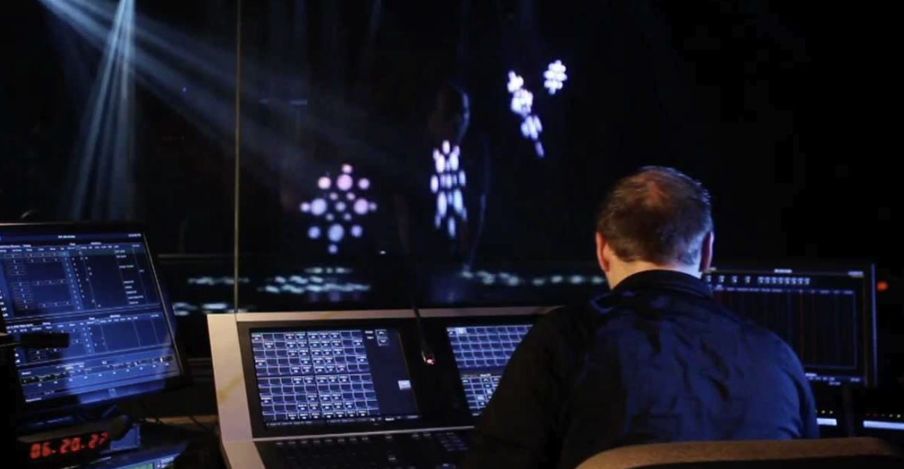
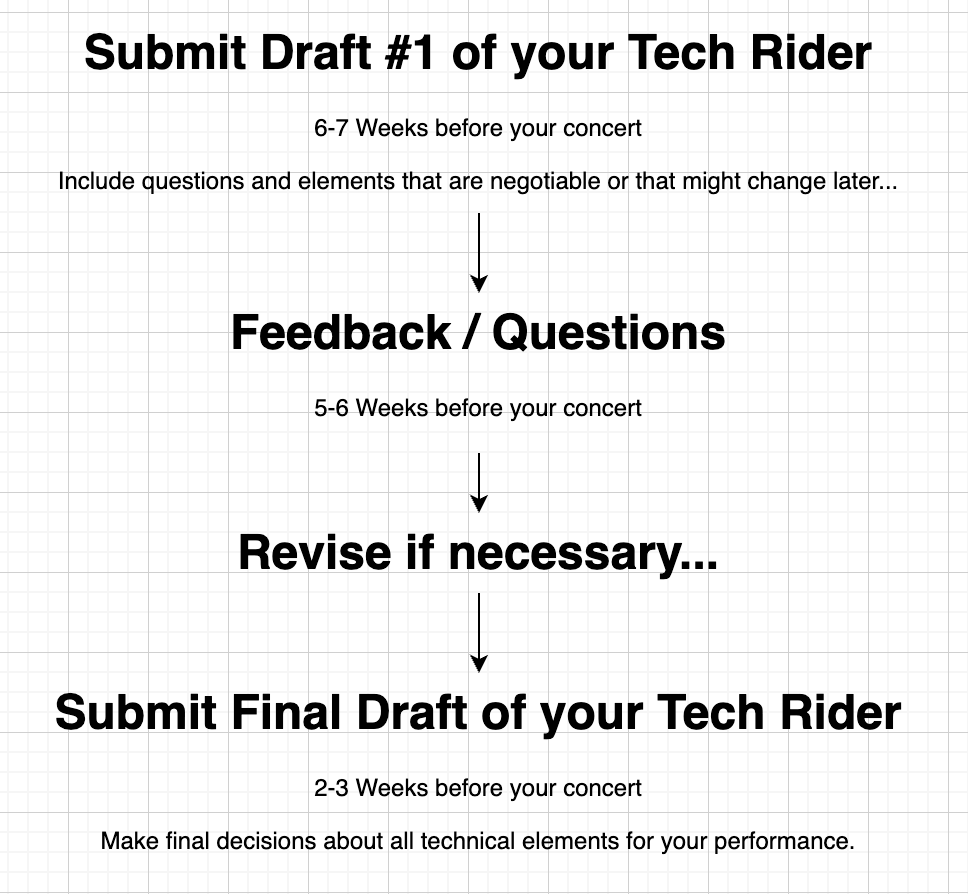
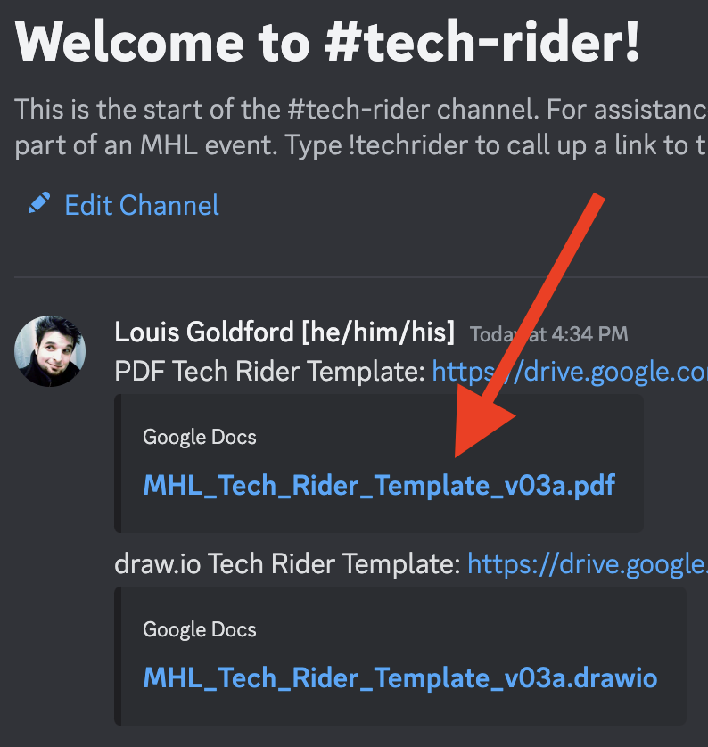
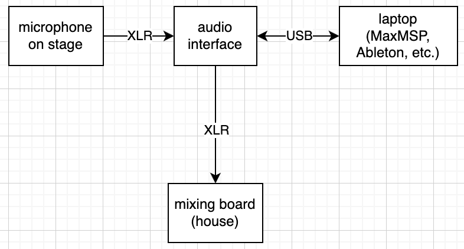
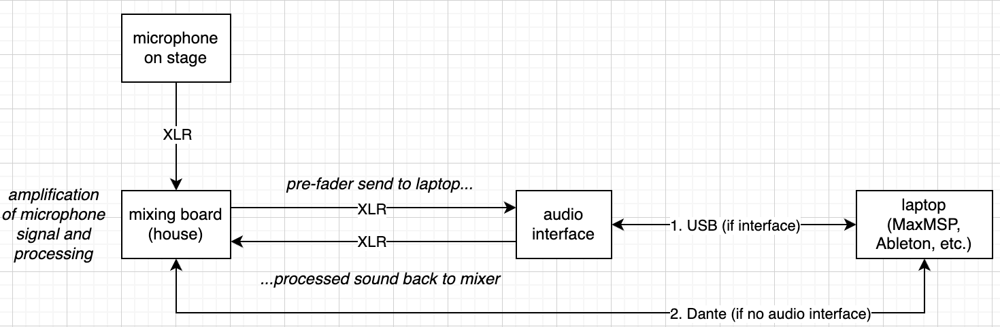
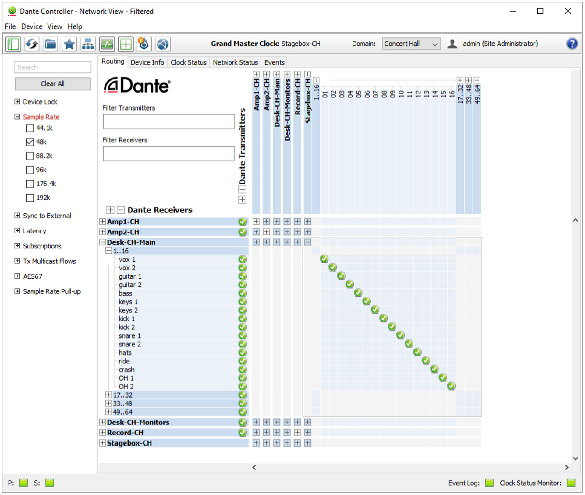
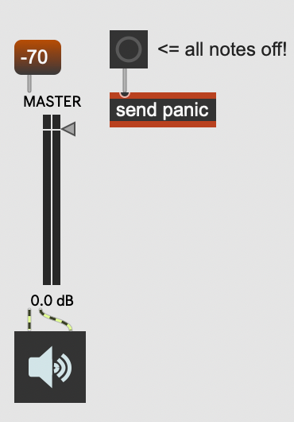

Digital Collaboration at MHL — Louis Goldford (2023)
What is Digital Collaboration?
As composers and musical creators,
we labor to make our artistic intentions logical and intelligible
to those we make music with.
For example, we notate performance directions in a score.
But this process does not stop
with performers realizing our vision...
What is Digital Collaboration?
If you produce works using musical and visual technology,
and if you request assistance from skilled experts,
What is Digital Collaboration?
You must clearly communicate your vision
as a member of an artistic team.
What is Digital Collaboration?
Just like the performers in your orchestra,
these skilled experts are your collaborators.
Who are your Digital Collaborators?
Who are your Digital Collaborators?
- FOH: Front-of-House Staff
- Tonmeister
- Live Sound Engineer
- Computer Music Assistant (RIM), "Electronics Assistant"
- Lighting Designer
- Stage Manager
- Stage Hands who move and position elements on the stage for you
Who AREN'T your Digital Collaborators?
Who AREN'T your Digital Collaborators?
Your collaborators are not mind readers.
They do not guess what your vision is.
Who AREN'T your Digital Collaborators?
Your collaborators are not magicians.
They do not produce instant solutions from very little or no guidance.
They are performing alongside you...
They are on your team...
What is Digital Collaboration?

When you ask someone to adjust your volume,
or move a microphone on stage,
What is Digital Collaboration?
or give you more light from the booth,
What is Digital Collaboration?

or operate your Max patch,
What is Digital Collaboration?
they become your collaborators.
They become members of your performance team.
They are performing your piece in real-time
along with your team of musicians on stage.
Curtain Call Etiquette
When you take a bow after a performance,
Motion to the lighting booth,
and motion to the mixing desk
to acknowledge these "hidden" performers!
What is Digital Collaboration?
As your team members,
they need a clear representation of your vision
in order to bring their expertise
to the realization of your piece:
They need to be creatively engaged,
just like your stage performers!
What is Digital Collaboration?
How do we creatively engage our digital collaborators?
How do we notate our artistic vision for them?
At MHL, we use 3 documents:
- Tech Rider
- Call Sheet
- Equipment Request Form
What is a Tech Rider?
What is a Tech Rider?
A tech rider (technical rider) is a document that contains all the information needed to assist you with a performance...
all the technical details that an artistic team needs
to realize your creative vision.
As a professional musician, you must share a tech rider with the
FOH (front-of-house staff) at your performance venue.
What is included in a Tech Rider?
- a written overview of the performance situation
- a stage plot (drawing) with the position of performers, microphones, loudspeakers, and other elements arranged in the performance space
- an audio connection matrix : a diagram detailing the how your equipment is routed to the house's mixing board and loudspeakers
- details about lighting and dramaturgy, if necessary
Who Needs to Submit a Tech Rider?
Any student or faculty member requesting
technical assistance for an MHL performance.
Who Should I Submit a Tech Rider to?
For MHL performances involving Digitale Kreation,
send your tech rider to Dr. Louis Goldford,
Technical Director of Digitale Kreation:
Louis.Goldford@mh-luebeck.de
When Should I Submit a Tech Rider?
When Should I Submit a Tech Rider?
Submit in advance according to the timeline on the previous slide, to ensure that we can assist you, and so everybody's questions get answered.
We need time to be sure we can do what you are asking.
We need time to answer essential questions and find solutions to problems,
such as equipment we do not have...
When Should I Submit a Tech Rider?
Without this timely critical information,
the studio simply cannot guarantee technical support.
Last-minute changes or additions are the responsibility of each composer or presenter.
How Do I Submit a Tech Rider?
Answer:
The MHL Tech Rider Template
How Do I Submit a Tech Rider?
Bookmark our MHL Tech Rider Template, here as a draw.io document that you can edit yourself online!
Link to draw.io template:
How Do I Submit a Tech Rider?
Or bookmark our MHL Tech Rider Template, here as a PDF document that you can draw on using a program on your computer, iPad, etc.
Link to PDF template:
Link in Discord Server
You can also find the template in our MHL Digitale Kreation Discord Server.
Send me an email for an invitation to the server!
Unideal Microphone Setup
No way to control the volume of the raw microphone input
from the house mix position!
Solution: Ideal Microphone Setup
Microphone can be mixed with laptop processing
from the house mix position...
Audio Connections: D or A?
If you are using Dante Virtual Soundcard and Dante Controller instead of an audio interface, audio connections should be marked D (digital) instead of A (analog).
MaxMSP Panic Method
All Max patches should have a panic method that immediately silences all audio output from your master bus somewhere easily accessible in your patch!
That's the end!
We hope you learned something useful
to use in your artistic practice!